Munnar
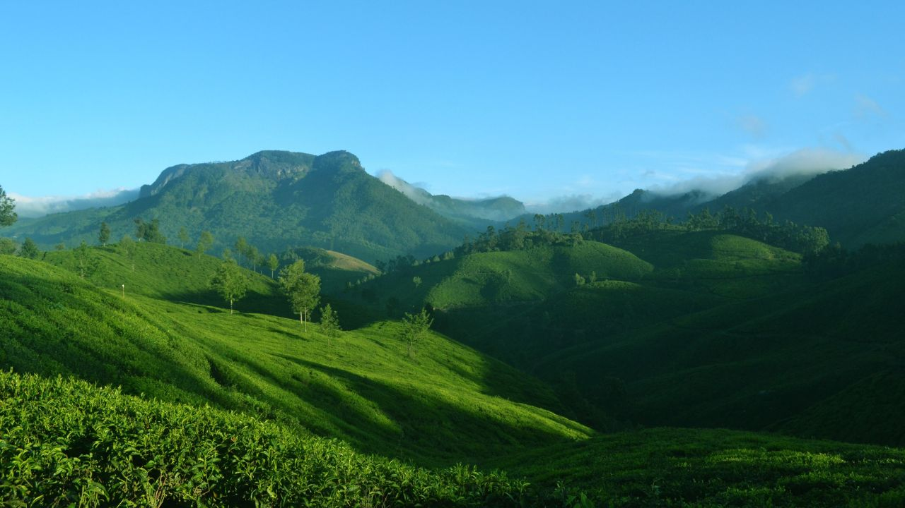
Lush green tea plantations in Munnar
Munnar is a breathtaking hill station located in the Western Ghats, renowned for its expansive tea plantations, misty hills, and cool climate. It's a paradise for nature lovers, offering scenic trekking routes through rolling green hills and opportunities to spot rare species like the Nilgiri Tahr in Eravikulam National Park. Visitors can explore scenic viewpoints such as Echo Point and Top Station, both offering panoramic views of the lush surroundings. Munnar is also famous for its spice plantations and tea museums, where tourists can learn about the history of tea production in the region and indulge in fresh brews.
Alleppey
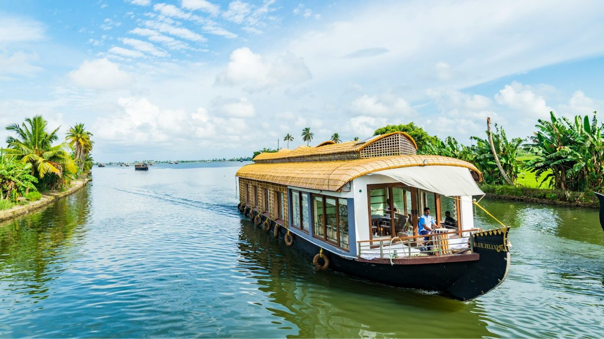
Houseboat on serene backwaters in Alleppey
Alleppey, also known as Alappuzha, is famous for its labyrinth of serene backwaters, earning it the nickname "Venice of the East." The highlight of a visit to Alleppey is undoubtedly a houseboat cruise through the tranquil canals, rivers, and lakes, providing a peaceful retreat from the busy world. The annual Nehru Trophy Boat Race, held in August, brings a burst of excitement to the region. In addition to backwater cruises, Alleppey is known for its beautiful beaches and the relaxing Ayurvedic spas that offer rejuvenating treatments using traditional healing methods.
Kochi
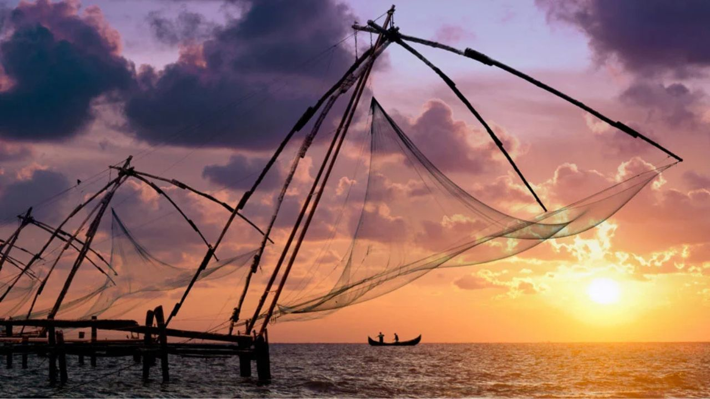
Chinese fishing nets in Kochi
Kochi, also called Cochin, is a vibrant port city with a rich blend of historical, cultural, and modern attractions. It has been a key trading port for centuries, resulting in a unique mix of Portuguese, Dutch, and British influences that are still visible today. The iconic Chinese fishing nets, the 16th-century Mattancherry Palace, and the Jewish Synagogue are must-visit landmarks. Fort Kochi’s colonial-era architecture and its quaint streets provide a peaceful retreat for those exploring the city's heritage. Kochi is also a contemporary cultural hub, known for the Kochi-Muziris Biennale, an international art festival.
Thekkady
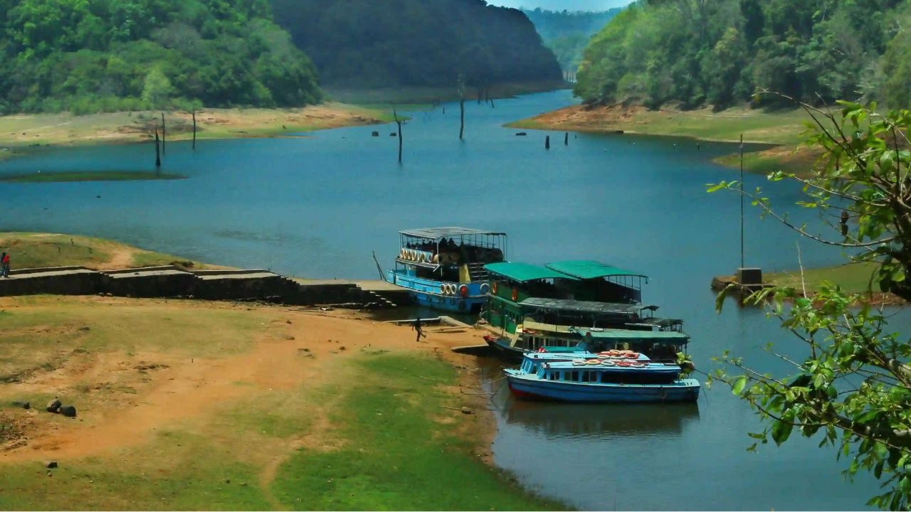
Boat safari in Periyar Lake, Thekkady
Thekkady is home to the renowned Periyar Wildlife Sanctuary, one of Kerala's most famous wildlife reserves. The sanctuary offers visitors the chance to see wildlife up close, with boat safaris on the Periyar Lake providing an opportunity to spot elephants, deer, bison, and a variety of bird species. Thekkady is also known for its spice plantations, where visitors can learn about the cultivation of spices like cardamom, pepper, and cinnamon. For adventure enthusiasts, Thekkady offers trekking, bamboo rafting, and jungle camping experiences, making it a perfect destination for nature and wildlife lovers.
Wayanad
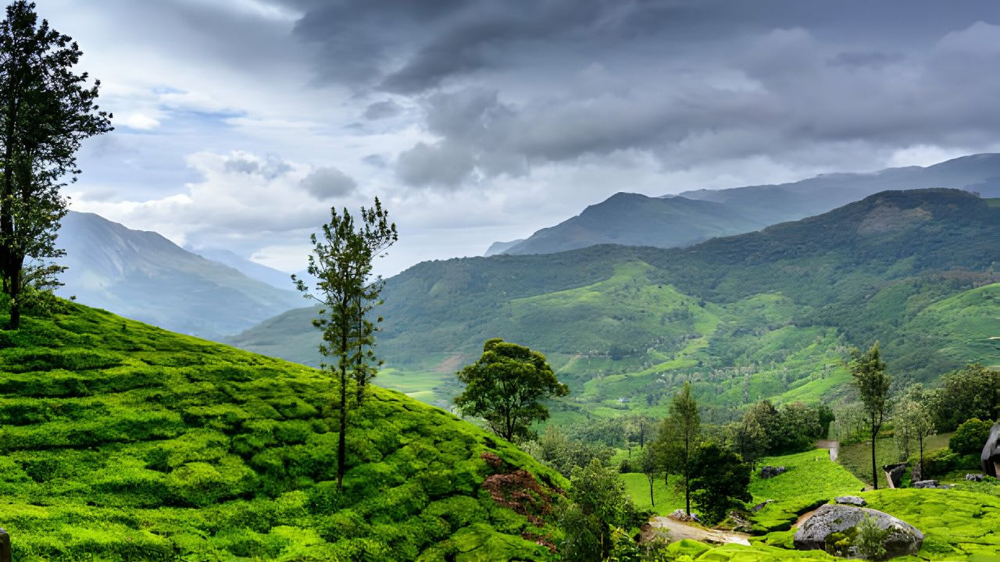
Beautiful landscapes in Wayanad
Wayanad is a beautiful district nestled in the Western Ghats, offering a stunning mix of forests, wildlife, and serene landscapes. The region is known for its rich biodiversity and is home to numerous wildlife sanctuaries where visitors can spot elephants, tigers, and leopards. Popular attractions include the prehistoric Edakkal Caves, featuring ancient rock carvings, and the Banasura Sagar Dam, one of the largest earth dams in India. Wayanad’s pleasant climate and numerous trekking trails through hills and forests make it a haven for adventure seekers and nature enthusiasts looking for a peaceful retreat.
Kovalam
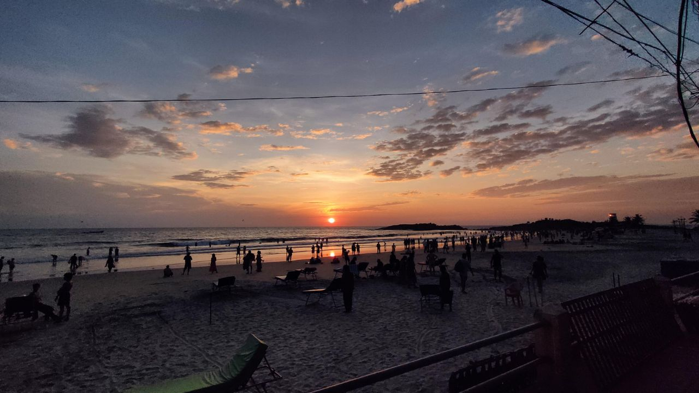
Sunset at Kovalam Beach
Kovalam is Kerala’s most famous beach destination, known for its stunning crescent-shaped coastline and clear blue waters. The three major beaches—Lighthouse Beach, Hawa Beach, and Samudra Beach—offer a variety of experiences, from relaxation to adventure. Visitors can enjoy water sports such as surfing, parasailing, and kayaking, or simply relax on the golden sands. The lighthouse at Lighthouse Beach provides panoramic views of the Arabian Sea. Kovalam is also famous for its Ayurvedic resorts, making it a popular destination for wellness tourism. With its laid-back vibe and vibrant beachside culture, Kovalam is a tropical paradise.
Festivals and Culture
Onam
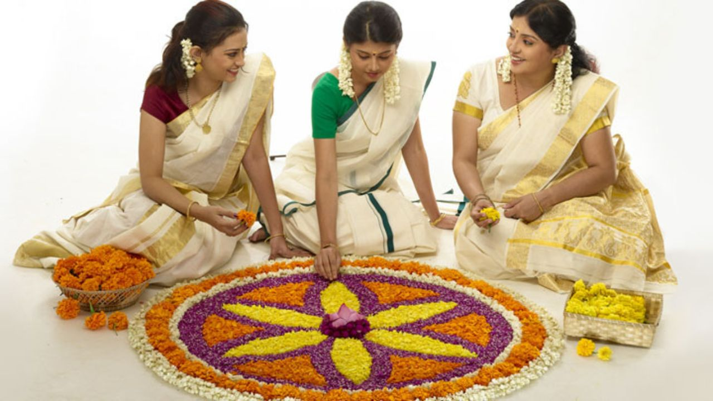
Colorful floral rangoli (Pookalam) created during Onam celebrations
Onam is Kerala’s most celebrated festival, marking the return of the mythical King Mahabali and the harvest season. The ten-day festival features grand feasts, cultural performances, and traditional games. The creation of intricate floral designs, known as Pookalam, adorns homes and public spaces. Onam also showcases Vallamkali (boat races), Pulikali (tiger dance), and the grand Onam Sadhya feast. This vibrant festival brings together communities, reflecting Kerala's rich cultural heritage and joyous spirit.
Vishu
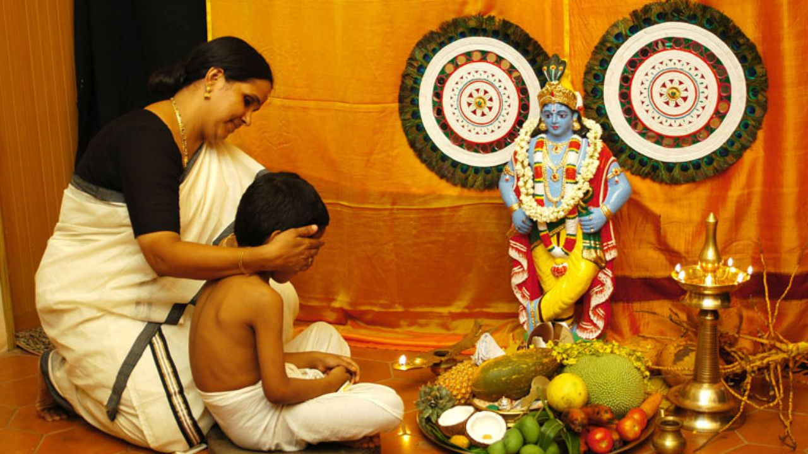
Vishu Kani, an auspicious arrangement of items to view on Vishu morning
Vishu, celebrated as the Malayali New Year, is a festival of prosperity and new beginnings. On this day, families prepare the "Vishu Kani," an arrangement of auspicious items such as fruits, flowers, coins, and a mirror to bring good fortune. The sight of the Vishu Kani is believed to usher in prosperity for the coming year. The day is filled with fireworks, family gatherings, feasts, and the traditional practice of gifting money to younger family members.
Kathakali
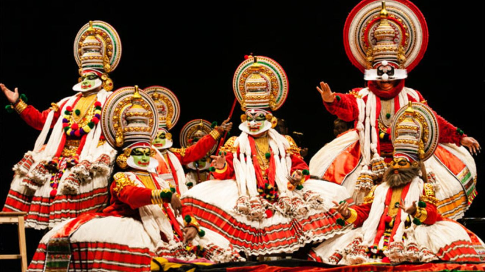
A Kathakali dancer performing with elaborate makeup and costumes
Kathakali is one of Kerala’s most iconic classical dance forms, combining dance, drama, and music to narrate stories from Hindu epics. With its colorful costumes, vibrant makeup, and elaborate headgear, Kathakali is a visual spectacle. Dancers communicate emotions and narratives through intricate facial expressions, gestures, and rhythmic footwork, often accompanied by live music. The performances can last for hours, creating a deeply immersive cultural experience that showcases the artistic depth of Kerala’s traditions.
Mohiniyattam
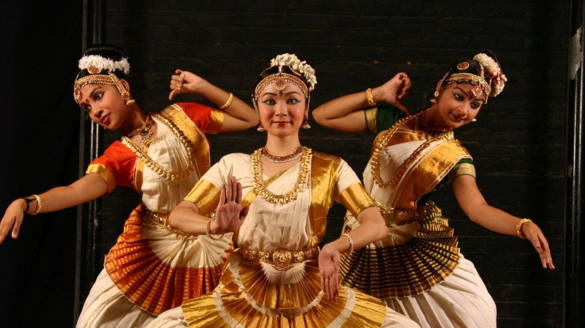
A graceful Mohiniyattam dancer in traditional white and gold attire
Mohiniyattam, meaning “Dance of the Enchantress,” is a classical dance form deeply rooted in Kerala’s traditions. This graceful art is performed exclusively by women, with flowing movements and subtle expressions that convey delicate emotions. The dancer, dressed in white and gold, mesmerizes audiences with her graceful, swaying movements and storytelling. Accompanied by melodious music, Mohiniyattam is a dance form that focuses on feminine grace, making it one of Kerala’s most cherished classical arts.
Kerala Mural Painting
 A traditional Kerala mural depicting Hindu gods in vivid colors
A traditional Kerala mural depicting Hindu gods in vivid colors
Kerala mural painting is a distinctive art form that can be traced back to ancient temples and palaces in the region. These murals depict mythological themes, often featuring Hindu gods, epic scenes, and vivid natural elements. Traditionally, natural pigments made from minerals and plants were used to create these elaborate paintings. Kerala’s murals are famous for their fine detailing, vibrant colors, and spiritual significance, reflecting the state’s deep connection to art and religion.
Chenda Melam
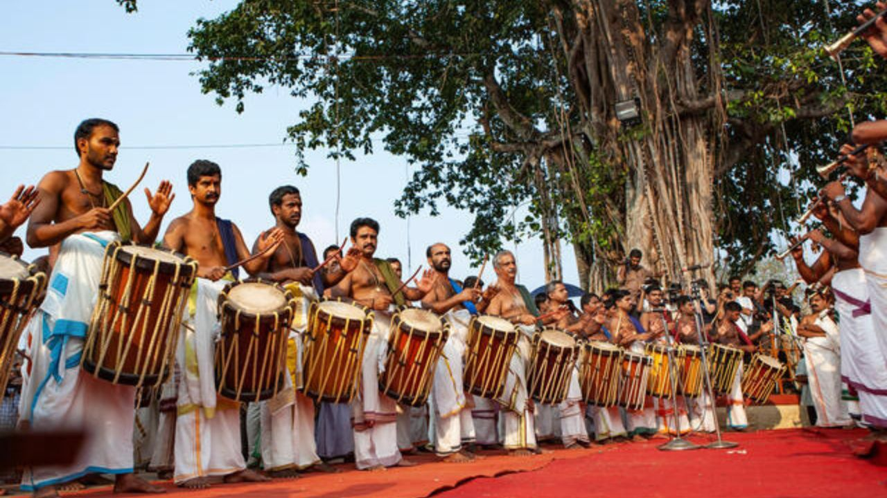
Chenda Melam performance during a festival in Kerala
Chenda Melam is a powerful percussion ensemble performed during temple festivals and cultural events across Kerala. The Chenda, a traditional cylindrical drum, produces a thundering rhythm that reverberates through the air, energizing crowds. Chenda Melam performances can include dozens of drummers, creating a mesmerizing wall of sound. The art form is especially prominent during grand festivals like Thrissur Pooram, where large Chenda Melam ensembles showcase the rhythm, coordination, and intensity that are central to Kerala’s musical traditions.
Kerala Cuisine
Sadya
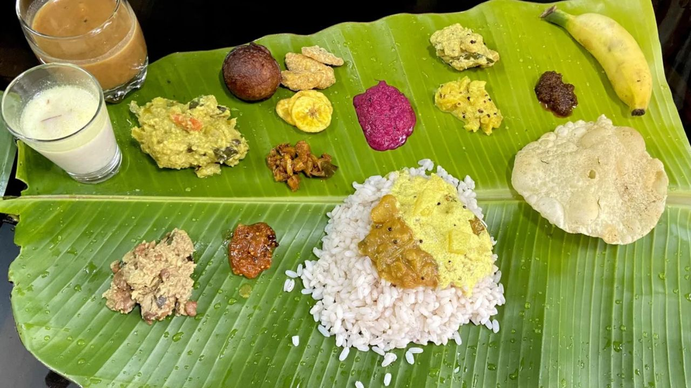
A traditional Kerala Sadya served on a banana leaf
Sadya is a grand vegetarian feast that plays a central role in Kerala’s festive celebrations, especially during Onam and weddings. This elaborate meal consists of a variety of dishes, typically served on a banana leaf, including rice, sambar, avial, thoran, pickles, and more. Sadya is a delightful explosion of flavors—ranging from spicy to tangy to sweet. The meal concludes with Payasam, a traditional dessert made with rice and coconut milk or jaggery. Sadya reflects the hospitality, diversity, and richness of Kerala’s culinary culture, bringing people together in celebration of life’s milestones.
Appam and Stew
 Soft appams served with Kerala-style vegetable stew
Soft appams served with Kerala-style vegetable stew
Appam and stew is a classic Kerala breakfast combination loved for its light, fluffy texture and subtle, comforting flavors. Appam, a pancake made from fermented rice and coconut batter, has a crispy edge and soft center. It is traditionally paired with a coconut-based stew, which can be either vegetarian, featuring vegetables like potatoes and carrots, or non-vegetarian with chicken, lamb, or fish. The creamy, mildly spiced stew complements the delicate appam perfectly, creating a wholesome and filling meal that is popular in both homes and restaurants across Kerala.
Malabar Biryani
 A plate of fragrant Malabar Biryani with chicken
A plate of fragrant Malabar Biryani with chicken
Malabar Biryani is a fragrant, flavorful rice dish that hails from Kerala’s northern Malabar region. Unlike other biryanis, Malabar Biryani is known for its milder spice profile, relying on a delicate balance of ghee, fresh herbs, and aromatic spices like cinnamon and cloves. The biryani is typically made with basmati rice and layered with marinated meat, usually chicken or mutton, along with fried onions, cashews, and raisins. This slow-cooked delicacy is a highlight of celebratory feasts, particularly during weddings and special occasions, and is cherished for its rich yet subtle flavors.
Puttu and Kadala Curry
 Puttu served with spicy black chickpea curry
Puttu served with spicy black chickpea curry
Puttu and Kadala Curry is a beloved breakfast dish in Kerala, offering a perfect blend of simplicity and bold flavors. Puttu is a cylindrical steamed rice cake layered with grated coconut, often served with Kadala Curry—a spicy, flavorful curry made from black chickpeas (kadala) cooked in a coconut-based gravy. The combination of the soft, crumbly texture of puttu with the rich, spicy curry creates a satisfying and hearty meal. This dish is also popular in sweet variations, with puttu served alongside bananas and sugar, reflecting Kerala’s versatility in blending savory and sweet elements.
Karimeen Pollichathu
 Karimeen fish wrapped in banana leaf and grilled
Karimeen fish wrapped in banana leaf and grilled
Karimeen Pollichathu is a signature seafood dish from Kerala, where Karimeen (Pearl Spot fish) is marinated in a flavorful blend of spices, wrapped in banana leaves, and grilled to perfection. The banana leaf not only infuses the fish with a subtle, earthy flavor but also keeps it moist and tender. The marinade, typically made with tamarind, chili, turmeric, and coconut oil, adds a burst of flavor that makes this dish stand out. Popular in the backwaters and coastal regions, Karimeen Pollichathu showcases Kerala’s love for fresh seafood and traditional cooking methods.
Kerala Parotta and Beef Fry
 Flaky Kerala Parotta served with spicy beef fry
Flaky Kerala Parotta served with spicy beef fry
The Kerala Parotta is a flaky, layered flatbread that is often paired with spicy beef fry, creating one of Kerala’s most popular and hearty street food combinations. The beef is cooked with aromatic spices, curry leaves, and coconut slices, giving it a deep, rich flavor and a distinct Kerala touch. The crispy, golden parotta, made with all-purpose flour, provides the perfect contrast to the spicy, succulent beef. This dish is enjoyed by locals across the state, especially in small eateries and food stalls, and is a must-try for visitors seeking the robust flavors of Kerala’s cuisine.